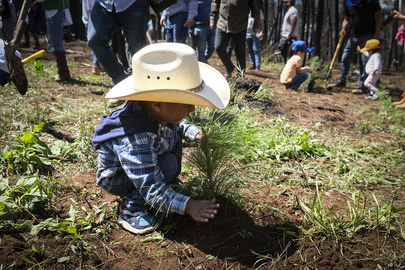
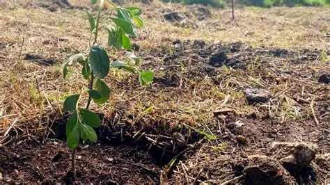

Sobre Nosotros
Sabías que en el Colegio Liceo Real Del Cid creamos una Pagina de programación sobre la reforestación.usamas el lenguaje de HTML.Somos una institución escolar comprometida con el cuidado del medio ambiente. Como estudiantes, reconocemos que la reforestación es fundamental para recuperar y expandir nuestras áreas verdes.
.jpg)
Nustras Actividades
En el mes de marzo, el colegio Liceo Real del Cid realizó una actividad de reforestación en la Universidad de San Carlos de Guatemala, donde se plantaron aproximadamente 50 árboles de distintas especies, entre ellas: jacaranda, lluvia de oro, palo blanco y hormigón.

Proyecto Sierra Norte

Resultados del proyecto
¿Qué es la reforestación?
La reforestación es el proceso de volver a sembrar árboles en un lugar donde antes existía un bosque o una zona arbolada que fue destruida o talada. 🌳 Su objetivo principal es recuperar el equilibrio ambiental, ya que los árboles ayudan a: Producir oxígeno y limpiar el aire. Conservar el suelo y evitar la erosión. Mantener la humedad y el ciclo del agua. Servir de hábitat para muchos animales. Combatir el cambio climático al absorber dióxido de carbono (CO₂). En pocas palabras, la reforestación es darle una segunda vida a la naturaleza sembrando árboles para proteger y restaurar el medio ambiente.